Żółw wodny to popularne zwierzę w domowych hodowlach. Wodny, stanowi wspaniały obiekt obserwacji – może godzinami wygrzewać się najlepiej w promieniach słońca, a międzyczasie wspaniale pływa. Piękne terrarium może być niezwykłą ozdobą każdego domu.
Jak dbać o żółwia wodnego? Żółw wodny nie jest trudny w hodowli i aby zapewnić mu zdrowe, szczęśliwe życie wystarczą odpowiednie warunki bytowe oraz zdrowa, dostosowana do żółwia dieta. Żółw nie potrzebuje czułości i raczej trudno z nim się komunikować,ale z pewnością obserwacja tego wyjątkowego zwierzęcia dostarczy opiekunom dużo radości i satysfakcji.


 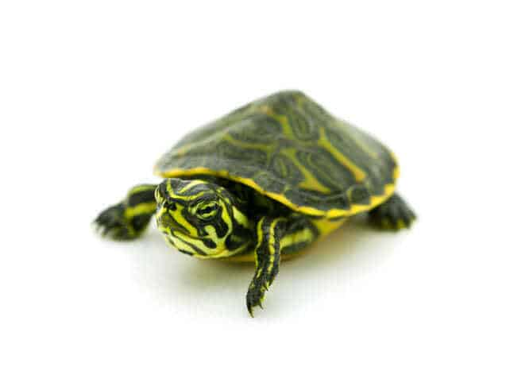
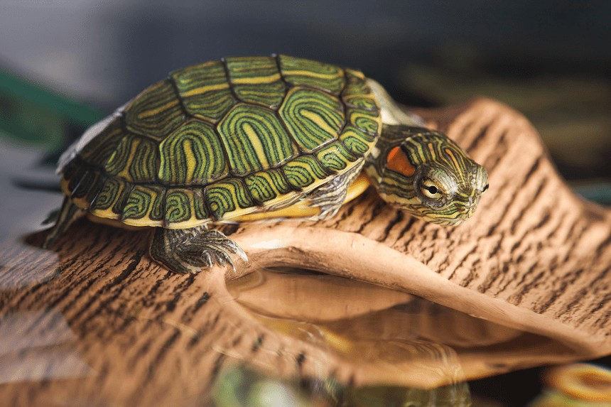
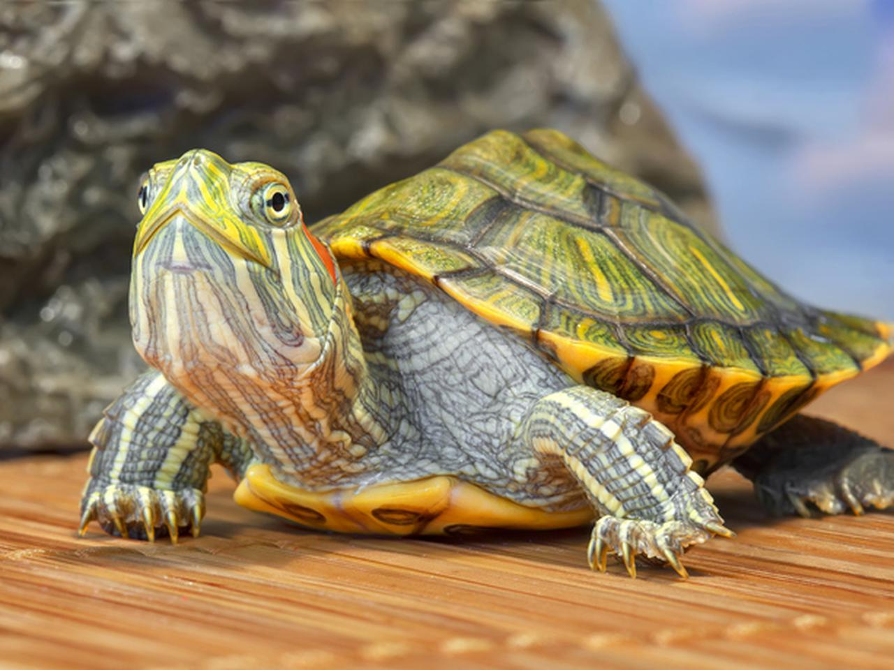
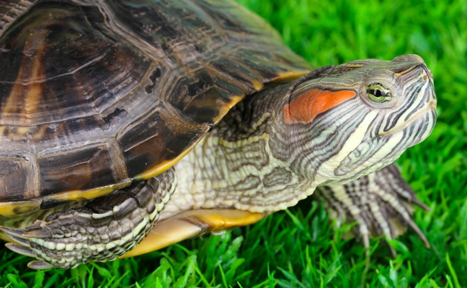
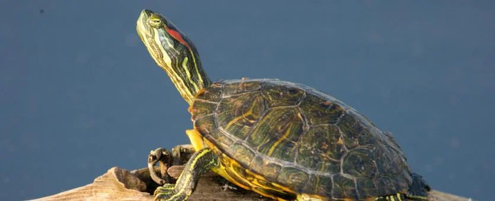
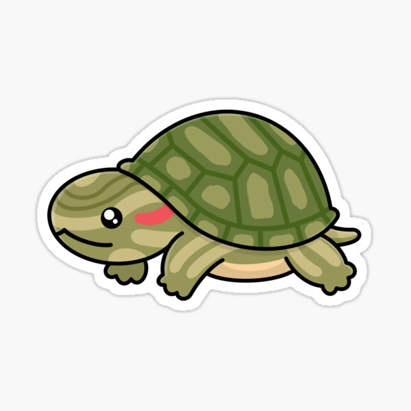
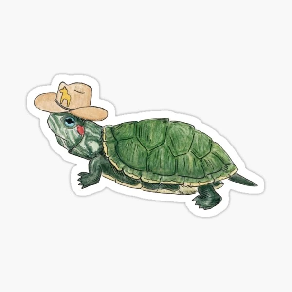
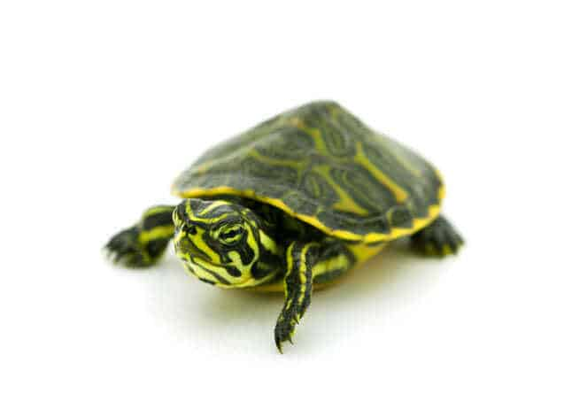
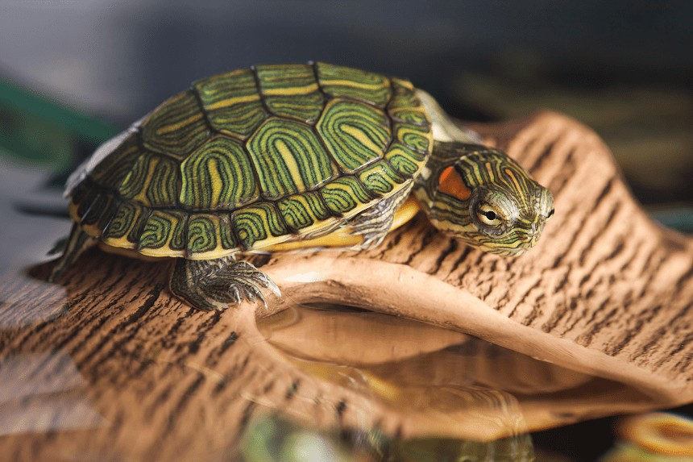
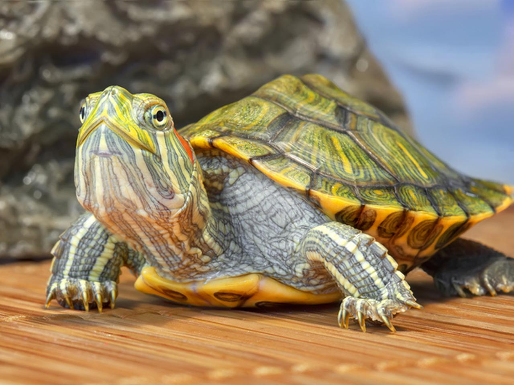
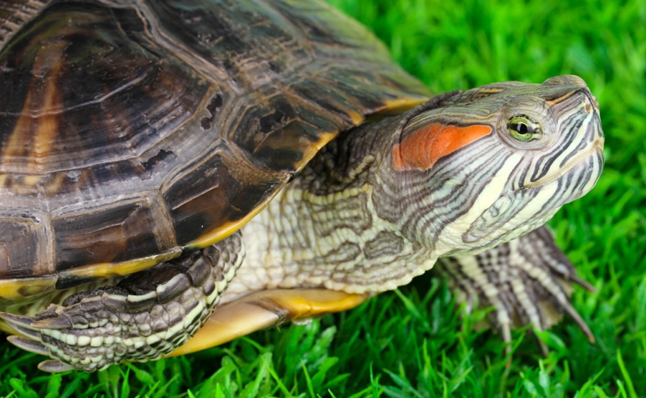
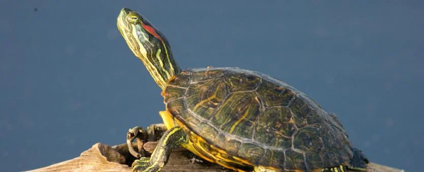
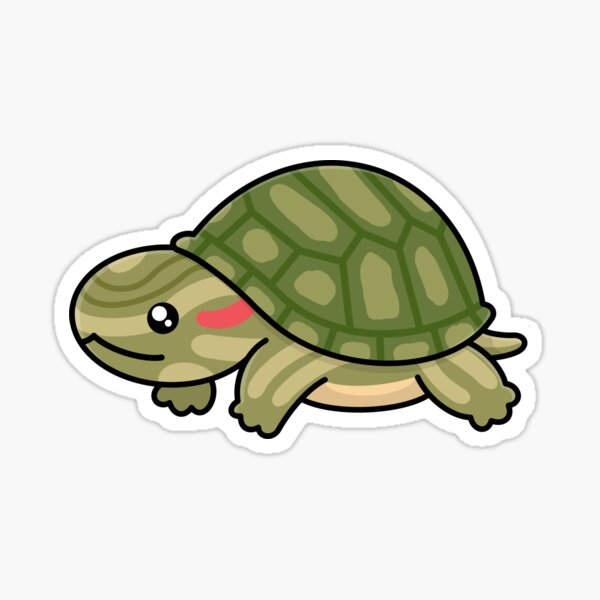
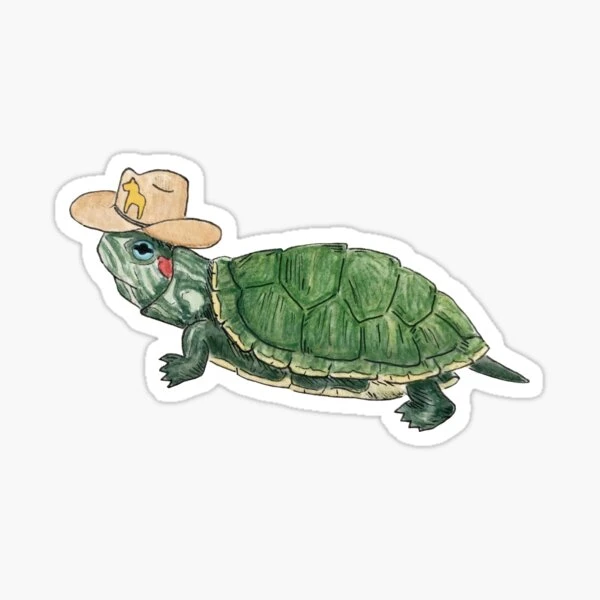